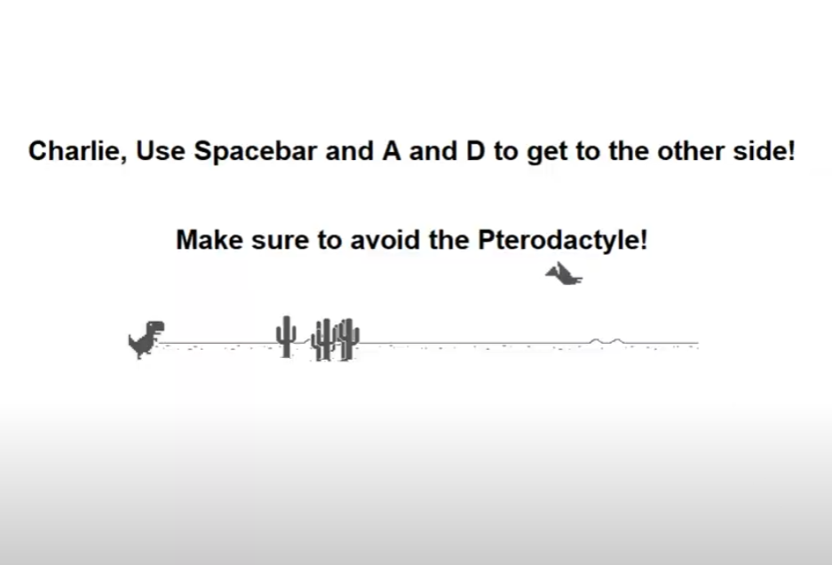

Home
About me
Portfolio
Perfect Pizza Party (1.1.9 Project)

For our first CSP project, we made a pizza using trtl. After the box is drawn, players have a choice of stuffed crust, pepperoni, mushrooms, and pineapple.
With the correct input, the toppings are placed randomly on the pizza. After, the pizza is sliced, and a slice is eaten.
Fruit Ninja (1.2.5 Project)

For our next CSP project, we made a simplified version of the game Fruit Ninja. Using images that were found on the internet and saving them as gifs, we had photos for the background and various fruits.
Fruits are randomly put on the screen, and then they fall. If you click on a fruit, it gets sliced, adding to your score. If you hit a bomb, however, fruits stop spawning and you get a "Game Over" screen.
Dino Dash (1.3.1 Project)

For our next CSP project, we made a card for a children's hospital. After they enter their name, the card opens and displays a get well soon message. They then have the option of playing a game similar to the
dino game in Chrome. They avoid the cacti and the pterodactyl, and attempt to get to the other side.
Slime Attack
We made our first Scratch Project, "Slime Attack!" Slimes come from all 4 sides of the screen, and the goal for the ninja is to use arrow keys to kill the slimes. As the game goes on, slimes come in faster and the ninja
tries to kill as many slimes as possible, increasing their score.
Phishy Tank (2.1.6 Project)

We received code from a company, then debugged their code and put up security measures to prevent phishing from occurring again.